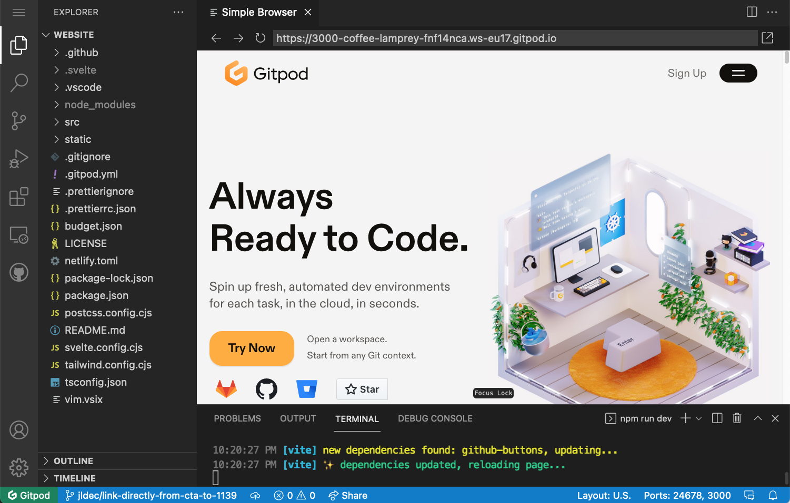
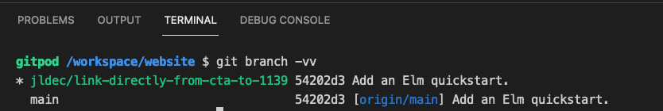
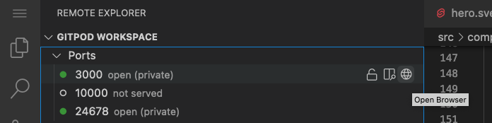

Gitpod Workspaces
Gitpod hosts workspaces for developers.
Think of each workspace as your own Linux container in the cloud, with a fully functional development environment, including:
- A clone of your git repo and your git working tree - the files you're working on.
- The tools you need while coding - compilers, SDKs, runtimes.
- Your editor - the default is VS Code + extensions - reachable through a browser.
- Shell access to run commands in the container.
Instead of laboriously maintaining your local development environment with everything you need, you simply open a new workspace every time you start working on a new project or branch.
PR for the Gitpod website
Here's how I created a PR for the Gitpod website in just a few minutes. This website was built using Sveltekit to generate static pages hosted by Netlify.
Starting from the issue, I opened a new workspace in Gitpod by prefixing the GitHub url like so: https://gitpod.io/#https://github.com/gitpod-io/website/issues/1139.
That url opened the workspace in my browser.

Running git branch -vv in a workspace terminal showed that git was already set to a new branch, conveniently named with my username and the description and id of the GitHub issue.

The workspace started up with npm modules already installed by a prebuild.
The repo was also configured to start a dev server listening on port 3000 in the workspace container. The open ports can be seen in the Remote Explorer sidebar on the left.

I used the Open Browser icon to open the webite in another browser window, and watched my changes taking effect each time I modified the code.
Finally, I pushed a commit with my changes on the new branch to GitHub, and proceeded to create my PR as usual. No localhost interaction other than running my browser was required.
This blogpost was written from a Gitpod workspace, and I recently joined the awesome team at Gitpod myself.
🚀
To leave a comment
please visit dev.to/jldec
powered by pub-server and pub-theme-pubblog